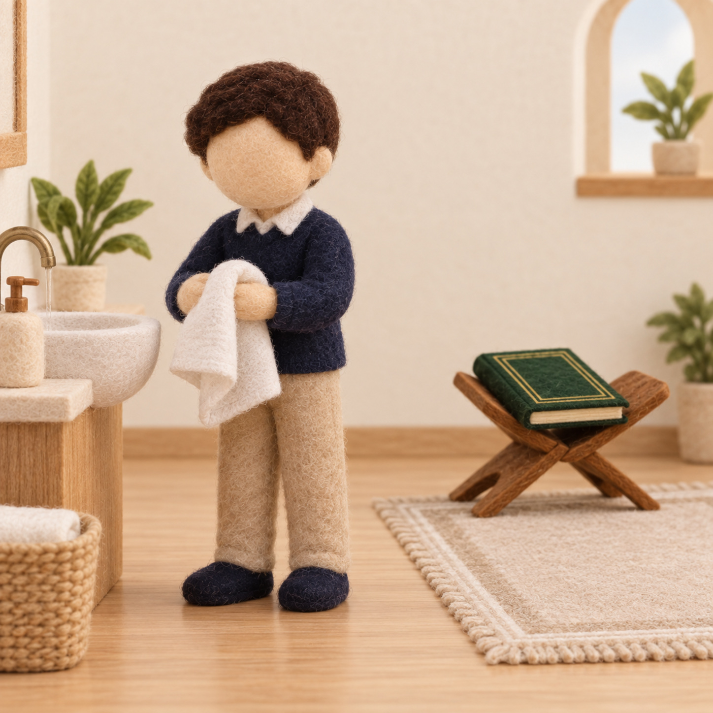
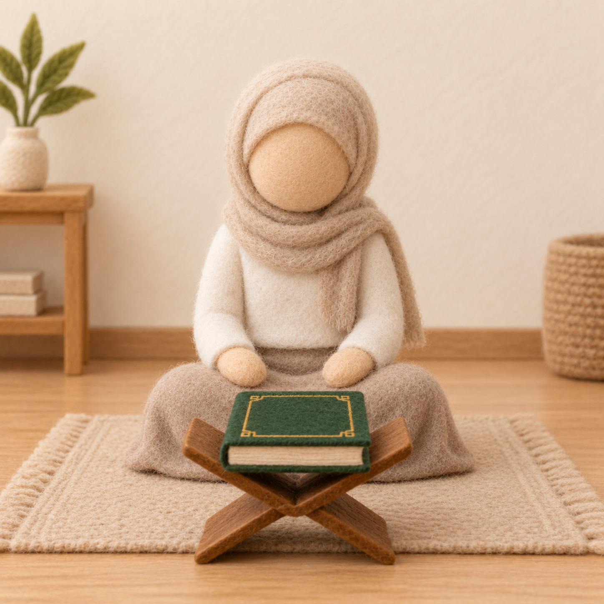
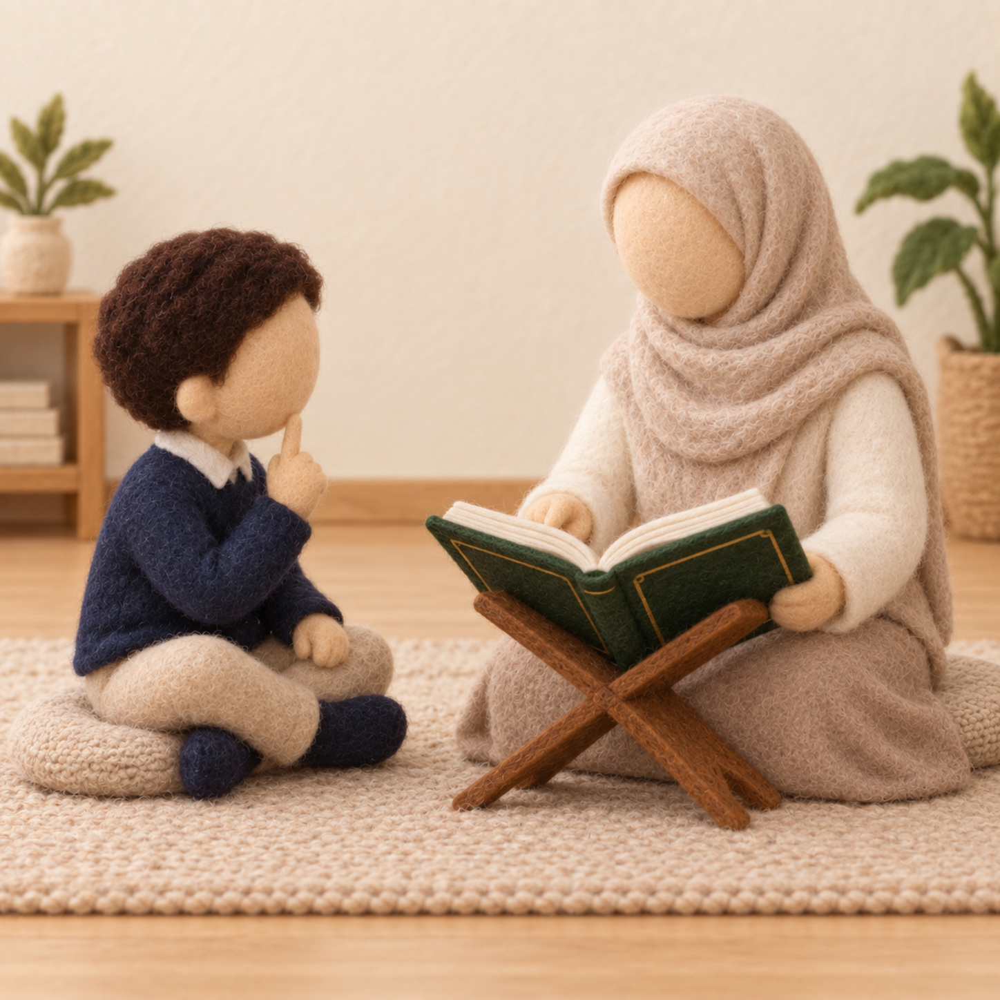
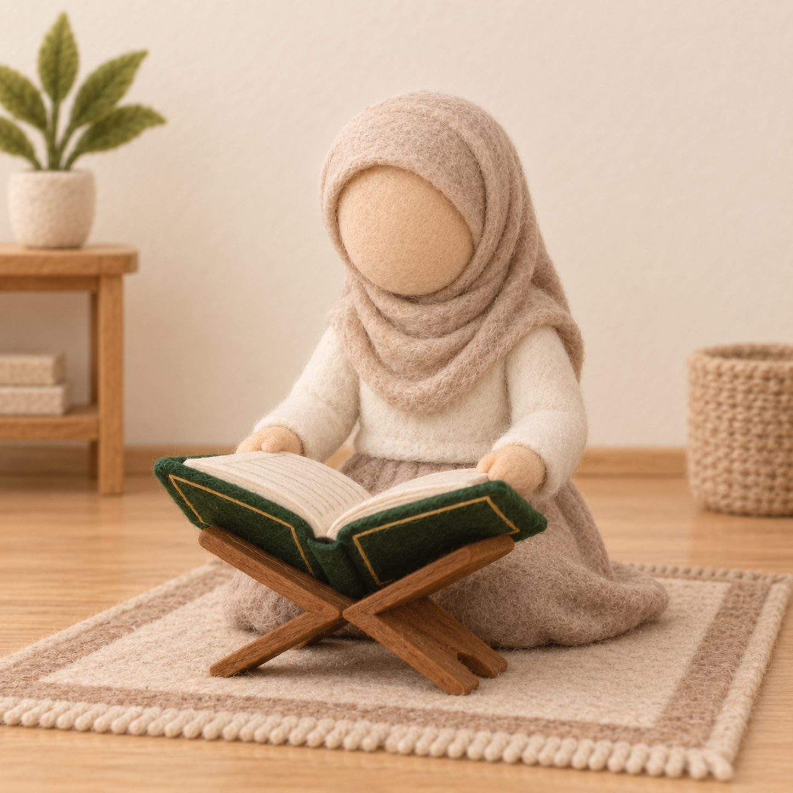

آدابُ الترتيل — مجلسُ القرآن في بيتي
وحدة المسكن · كتابي المنير — سورة الإنفطار (الدرس الخامس) · ركن أقرأ لأتعلم
طريقة العمل: نهيّئ ركنًا هادئًا «مجلسَ قرآن». اقصصي بطاقات الآداب واعرضيها في المجلس، ويقرأ كلُّ طفلٍ أدبًا ويطبّقه قبل الترتيل: يجلس بسكينة، ويُنصت لمن يرتّل، ويرتّل بهدوء، ويصون المصحف. نختم: بيتنا فيه مجلسٌ هادئٌ نتلو فيه كلام الله بأدب.
بطاقاتُ الآداب — تُقصّ وتُعرض في المجلس
١

صورة: الطهارةأتطهّرُ قبلَ مجلسِ القرآن
٢

صورة: الجلوس بأدبأجلسُ بأدبٍ وسكينة
٣
 صورة: المصحف
صورة: المصحف
صورة: المصحفأمسكُ المصحفَ باحترامٍ وأصونُه
٤

صورة: الإنصاتأُنصتُ لمن يرتّلُ ولا أقاطعُه
٥

صورة: الترتيلأرتّلُ بصوتٍ هادئٍ جميل
٦
صورة: المصحف
صورة: المصحفأعيدُ المصحفَ إلى مكانِه مرتّبًا
الخلاصة: يكون في مسكننا مجلسٌ هادئٌ لتلاوة القرآن وترتيله بأدبٍ وإنصات. — للمعلمة: نشاطٌ تطبيقيٌّ بعد الدرس لمجموعةٍ صغيرة (٤–٦)، وثّقي استقلال الطفل دون تحويله إلى اختبار.
دليل معلمة غرس القيم · نشاط تطبيقي — ركن أقرأ لأتعلم